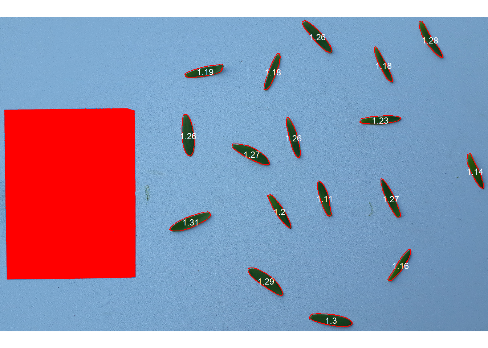

setwd("E:/Desktop/UFSC/projetos/pesquisa/desempenho_linhaca/pliman_rbras2022/imgs")Códigos exemplo pliman
Diretório
Pacote e imagem
library(pliman)
img <- image_import("img3.jpg")Escala de cinza
cinza <- image_index(img, "R/(G/B)")
plot(cinza)
plot(cinza, type = "density")Imagem binária
image_binary(img, "R/(G/B)")image_binary(img, "R/(G/B)", filter = 3)Imagem segmentada
image_segment(img, index = "R/(G/B)", filter = 3)Análise de imagem única
res <-
analyze_objects(img,
reference = TRUE,
reference_area = 20,
back_fore_index = "R/(G/B)", # padrão
fore_ref_index = "B-R", # padrão
marker = "length", # plota o comprimento
watershed = FALSE)Análise de imagem em lote
res <-
analyze_objects(pattern = "img", # busca o padrão no diretório
reference = TRUE,
reference_area = 20,
back_fore_index = "R/(G/B)",
marker = "length",
save_image = TRUE, # salva a imagem
dir_processed = "proc", # cria uma subpasta
marker_size = 2,
watershed = FALSE)
## Processing image img1 |============== | 33% 00:00:00 
## Processing image img2 |============================ | 67% 00:00:04 ## Processing image img3 |==========================================| 100% 00:00:10 
## --------------------------------------------
## Image Objects
## img1 103
## img2 160
## img3 17
## --------------------------------------------